table组合标签
注：表格后台查询返回到页面的List<Map>，由于都经过initPagination(a,b,c)方法处理，所以Map中的key都已经转为纯小写了。
由此，<table>标签中fields等属性也应该全部小写。
query_bar标签：
- query_bar标签有属性：id，icon【2.2】，title【2.2】，style_type【2.2】
style_type【2.2】: style_type属性是用来控制query_bar的风格样式，暂时提供"default"（默认样式），"classical"（经典样式）,"simple"(简约样式)
icon【2.2】: icon属性是用来控制query_bar的标题头的图标，默认没有图标，图标设置参考button标签title【2.2】: title属性为标题属性
query_bar配合table标签使用，类似于form标签
<@query_bar id="queryForm">
<@form_group class="row">
<@input label="部门编号" name="brchId" size="2" />
<@input label="部门名称" name="brchName" size="2" />
<@button value="查询" onclick="queryInfo()" auth_key="brch_query"/>
</@form_group>
</@query_bar>
table_toolbar标签：
- table_toolbar标签有1个属性为name；table\_toolbar配合table标签使用，在table标签前使用，用于包裹操作表格的工具的工具栏必须配合table标签使用，在引用table标签之前引用
<@table_toolbar name="查询结果">
<@button value="新增" data_target="modal_add" icon="plus"/>
<@button value="批量激活" onclick="activeAndCancel('active','mytable')" icon="ok-sign"/>
<@button value="批量注销" onclick="activeAndCancel('cancel','mytable')" icon="remove-sign"/>
</@table_toolbar>
table标签：
- 引入表格栏 table （其他控件参看基本表单控件和扩展表单控件），表格控件的使用包含在此例中
<@table url="${base}/oper/query" thead=[ [ {"name":"一级标题"}, {"name":"二级标题","colspan":"2"}, {"name":"三级标题","colspan":"2"} ], [ {"field_col":"oper_id","name":"编号"，"size":"2"，"position":"center","hide_beyond_content":"5"}, {"name":"名称", "size":"2"}, {"name":"机构","size":"2"}, {"name":"状态"}, {"name":"级别"} ] ] fields="id,oper_id,oper_name,org_name,brch_name,oper_state,oper_level" translate={"oper_state":"STATE", "oper_level":"OPER_LEVEL"} idtype="radio" operate="true" btn=[ {"name":"detail","onclick":"viewDetail(this)","title":"提示"}, {"name":"edit","auth_key":"brch","onclick":"editItem(this,'mytable')"}, {"name":"active","cust_label":"启 用","onclick":"activeItem(this,'mytable')"}, {"name":"cancel","auth_key":"brch_cancel","cust_label":"禁用","onclick":"cancelItem(this,'mytable')"}, {"name":"delete","onclick":"delItem(this,'mytable')"} ] cust_btn=[ { "name":"test1", "onclick":"doTest('sd')", "text":"自定义", "icon":"ext_assessedbadge", "color":"success", "auth_key":"brch_cust", "title":"提示" "dynswitch":{"dynbind_field":"brch_state","show_condition":["0",“1”]} }] sort=["oper_id", "oper_name"] img_fields={"img_wrap":"img"} id="mytable" merge_cells=[ {"coordinate":"3,0","rowspan":"10"}, {"coordinate":"4,0","rowspan":"10"} ] callback="setPanelData" width="120" is_static="false" data_auth="{operId:admin}" default_page_length="10" <#--脱敏开关，为true时执行脱敏操作，fields_sec属性生效，默认false--> fields_sec_open="true" fields_sec=[ { <#--表示对指定字段处理，同理可配置多个字段 --> "name":"brch_name", <#--mobile或name或fixphone等，指定默认脱敏类型--> "sec_type":"name", <#--other_rule为其他规则，不按照默认脱敏类型，自定义脱敏-> "other_rule":"left,1" } <#--控制td内容的隐藏，默认开启，超过某一个length长度就会隐藏多余部分--> hide_beyond_content={"flag":"true","beyond_num":"5"} <#--关闭横向滚动条--> scrollx_flag=“false” scrolly=“400” ] /> <!-- 所有提交的url地址的前缀都要加上 ${base} 1. 表格控件必须的三个参数：url、thead、fields 2. *url： 提交的后台地址 3. *thead【1.2】： 表头显示的字段名（不包括第一列的id列），thead在【1.2】以后支持多级表头，每一列标题头支持3个属性，name属性指定列名，rowspan属性支持指定标题头占用的行数，默认值为1，colspan属性支持指定标题头占用的列数，默认值为1,【2.0】版本后有size属性，如果不填，默认自适应,【2.1版本】后支持position属性，支持left，center，right属性，控制数据列的位置，【2.6】版本后加入field_col属性和hide_beyond_content，该属性用于绑定fields属性的对应字段，只对有效列（即多级表头时有效对应加载数据列的独立列，对于单级标题，每一列都是有效列）有作用，如果要支持自定义隐藏属性hide_beyond_content和位置控制position属性就需要加列绑定属性field_col,指定对应列，如"field_col":"oper_name",【2.6】后加入hide_beyond_content属性，用于自定义控制隐藏多余内容，该局部属性优先级高于全局属性的hide_beyond_content属性，如"hide_beyond_content":"4" 4. *fields：sql语句中显示的字段名，【1.4】版本后fields属性可以不填id项，如果不填id项则认为表格不需要首列勾选，则idtype属性无效，当id列存在时，idtype属性的单选框和复选框才有效，【2.6】版本后可以加入treegrid列，即表格的级联树控制，详细介绍在下面另起小结介绍，示例可参考demo的table标签。 5. translate：待转义的字段，格式为json格式 6. idtype：id列形式（单选框 radio、复选框 checkbox），默认复选框。 7. operate：是否显示操作列，true 显示，false 不显示 8. btn【1.1】：显示的按钮，目前有5个固定的常用按钮： detail 查看详情，edit 修改，delete 删除，active 激活，cancel 注销，显示按钮必须开启操作栏 每个按钮有三个属性，name属性只有以上六种值，auth_key为权限属性，匹配sys_func表中的url，cust_label属性为自定义按钮的名字，存在默认名，onclick属性绑定执行的方法**必填**,【2.1】版本后加入提示title属性， 【2.2】版本后加入style_type属性，可填值“icon”,按钮变成图标风格，不填为默认风格 9. cust_btn【1.1】:cust_btn属性是除了以上常用按钮的自定义按钮,五项属性中name属性和onclick属性为必填项，且onclick的值现在只支持 "doTest('sd')"这种传参方式，不支持'doTest("sd")'方式，text属性为button的显示值，icon属性为图标，默认为搜索图标，【2.0】版本后支持图标扩展可以使用font-increator下的图标，前缀"ext_"加图标样式名即可以使用，如"ext_assessedbadge"，详细可以参考button标签 color属性为颜色属性，可以填写的值为"success"、"danger"、"info"、"warning"、"primary"，默认为蓝色,auth_key为权限属性，匹配sys_func表中的url, dynswitch为动态切换自定义属性，其中还包含三个属性，分别为dynbind_field指定绑定字段，对应table标签中fields中的值，show_condition属性为指定显示按钮的情况， 值为数组，如上"show_condition":["0","1"],指当在sys_code表中valuecode为“0”或“1”时显示，对应的还存在noshow_condition属性为不显示的情况， show_condition和noshow_condition属性不能同时使用，同时存在时遵循show_condition属性， 【2.1】版本后加入提示title属性，【2.2】版本后加入style_type属性，可填值“icon”,按钮变成图标风格，不填为默认风格 10. sort：支持排序功能的字段，默认除了id列和操作列外所有字段都支持 11. img_fields【1.1】:支持缩略图功能，img_fields={"img_wrap":"img"},"img_wrap"为缩略图字段，"img"为原图字段,点击缩略图弹出原图 12. id【1.2】:指定表格id，【1.2】以后页面支持多表格，若未指定id属性时，id默认值为"mytable"，因此在多表格并存时，只能有一个表格可以不指定id。 13. merge_cells【1.2】：合并单元格属性，【1.2】以后表格支持单元格合并属性，单元格合并有3个属性，coordinate属性指定操作合并的单元格坐标（x,y），rowspan指定合并的行数，默认值为1，colspan属性指定合并的列数，默认值为1，注意已经被合并占用的单元格不可以重复合并 14. paginate【1.2.3】：paginate属性为是否分页属性，默认为true（开启分页） 15. load_data_init【1.2.3】：load_data_init属性为是否初始化加载数据开关属性，默认为true（首次进页面加载数据）,【1.4】版本后，支持传入的值为“true”，“false”，或指定查询条件的formId，当值为“true”或不填该属性时，默认不带查询条件初始化加载数据，为“false”时不加载数据，为formId时，会带查询条件加载数据,如load_data_init="queryForm" 16. callback【1.2.3】：该属性为表格的附加回调方法，**在表格数据加载完后表格渲染前**，会调用指定的方法，如：callback="setPanelData" ，**注意：该方法必须在表格加载前被定义** 17. width【1.2.3】:该属性为表格的宽度属性，默认为100 18. 表格若不需要id列，fields 中去掉 id 字段，同时后台 sql 也去掉 id 字段：如下 fields="oper_id,oper_name,org_name,brch_name,oper_state,oper_level" 19. no_search_sm【1.3】：查询无记录时，提示区域大小:true/false，默认false正常大图显示。可用于表格下方还有组合用的面板场景使用。 20. is_static【1.4】：设置是否为静态表格，静态表格为不与后台数据动态交互的表格，可以手动新增数据和删除数据，详细例子见如下小章节说明。 21 data_auth【1.4】：用于加载表格时提供的json数据串，主要用于控制权限，规定json串格式，如 data_auth="{operId:admin}" 22. default_page_length【1.4】：用于设置表格加载时默认每页的记录条数，不填默认为10条记录，如 default_page_length="20"，【2.1】版本后以table_toolbar组件的分页器page_change为主，分页器存在时，该属性屏蔽 23. fields_sec_open【1.6】：是否开启脱敏功能，如：fields_sec_open="true",默认false，为true时fields_sec属性功能才有效，注意【1.9】版本后总开关属性转为由后台配置文件para.propertity获取,属性名相同， ；另外该属性在前台标签中改为针对操作员是否开启脱敏功能，默认true脱敏功能开启，可以对一些操作员不显示脱敏 24. fields_sec【1.6】：脱敏的规则数据，fields_sec=[{"name":"brch_name","sec_type":"name","other_rule":"left,1"}]，其中name属性指定需要脱敏的字段且必填，sec_type为指定默认脱敏类型且必填，可以填的值有：name（姓名），idCard（身份证），fixedPhone（固定电话），mobile（手机），email（邮件），bankCard（银行卡号），other_rule属性为其他规则脱敏，该属性会屏蔽默认的脱敏规则有两个值，第一个为位置，可以填left，center，right，第二个值为脱敏长度，将换成“*” ，在【1.8】版本后，表格的脱敏支持自定义六种脱敏类型的默认脱敏方法，具体内容见下面的自定义默认脱敏 备注：存在id列的情况下，首字段 id 固定，mapper 中提供的 sql 语句必须提供 id 字段名（详细见后续 mapper 语句编写） 25. draw_callback【2.1】：该属性为表格的附加回调方法，**在表格渲染后**，会调用指定的方法，如：draw_callback={"name":"setPanelData","params":{'test':'test'}},name时调用的方法名，params为方法的参数，必须为对象类型 26. hide_beyond_content【2.2】：该属性为表格控制隐藏td中多余的内容，将多余的内容转成省略号，鼠标移到上面会显示具体内容，含有属性如hide_beyond_content={"flag":"true","beyond_num":"5"}，flag属性为开关，默认为“false”，beyond_num为控制的length长度，默认为“5”，**注意**hide_beyond_content属性处理会在脱敏功能处理以后执行 27. scrollx_flag【2.4】：该属性为控制表格是否需要滚动条功能，在表格列数据比较多的时候开启，可填值为true和false，默认true 28. banner_have【2.4】：该属性为控制是否给全局的文字加底纹旗帜，可填值为true和false，默认false 29. total_row【2.4】：该属性用于控制合计行，合计行可以合并，在开启该功能时后台必须自行加一行对应的数据，前台可以进行合并total_row=[{"x_coordinate":"2","colspan":"3"}]，其他不合并的都默认占一列，x_coordinate为x起始坐标（从0开始，这里是排除了冻结列的起始坐标）,colspan为占用的列数，如果合计行开启又不需要合并列，可以total_row=[]，具体见文档 30. scrolly【2.7】： 该属性开启纵向滚动条，需要指定固定的高度，默认不开启该属性 ，**注意：该方法必须在表格加载前被定义**表格数据显示例子如下图：
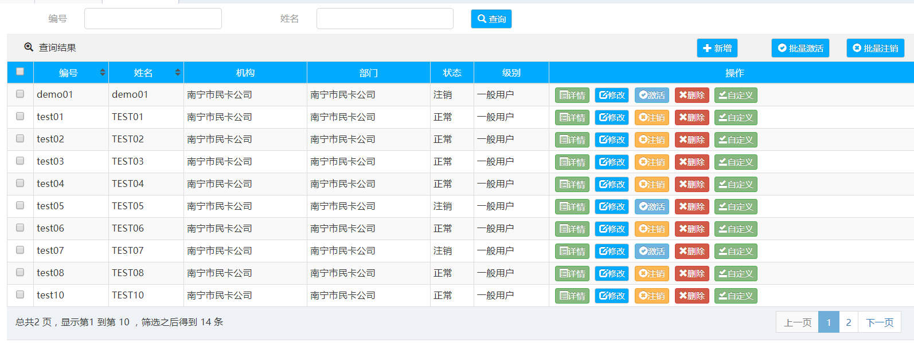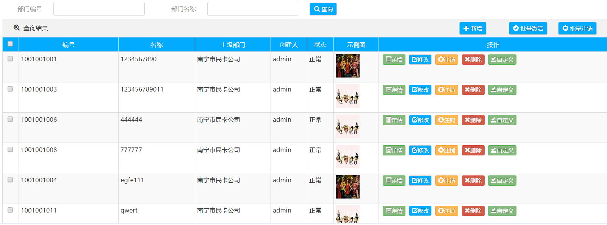表格多级表头和合并单元格示例图：
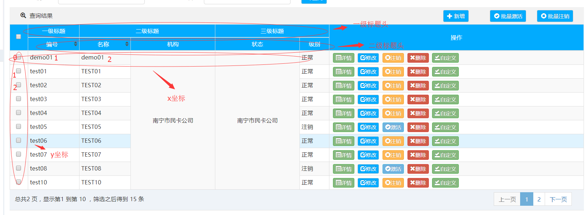获取表格相关数据：
getTable(tableId);//获取表格对象 getTableRows(tableId);//获取表格当前页行数据 getSelectedTableRows(tableId);//获取表格当前页选中行数据 getTableRowById(rowId,tableId);//根据rowId获取行数据,rowId值 getCodeName(value,type,tableId);//获取翻译的name值，从sys_code表中获取 getCodeValue(name,type,tableId);//获取翻译的value值，从sys_code表中获取 removeSelectedTableRows(tableId);//删除当前表格所有勾选的行数据，只适用于静态表格 removeTableRow(obj,tableId);//删除当前行数据，只适用于静态表格,obj为当前tr标签包含的元素 addTableRow(obj,tableId,idType);//新增表格行数据，只适用于静态表格,obj为传入新增的行数据，idType为首列勾选的样式，可填三个值：none，radio，checkbox，默认none tableBandClick(obj)【2.4】;//为表格指定的td位置绑定自定义的方法，如果表格中没有数据就不绑定 其中包含tdPosition(数组类型[{}]包含需要绑定事件的td标签的坐标位置，其中子对象包含数rowIndex(行下标， 从0开始)和colIndex(列下标，从0开始)，如果不指定行，则绑定整列)和bandFunction绑定的自定义的方法名和 tableId 调用如： tableBandClick({"tdPosition[{"colIndex":"2"}],"tableId":"mytable","bandFunction":"daTest1"}); */ 例:getCodeName("0","STATE","mytable");//值为"注销" /** * ajax表单提交，只针对表格 * @param url 提交地址 * @param formId 表单id，可为空 * @param convertName 需转换的name属性，可为空，例子："role1.id,role2.id ..." * @param modalId form表单提交时的modalId * @param tableSearchDataJson 表格查询所需的过滤数据，表格查询时不能为空 * @param tableId 表格Id值，必须传 * @param updateTableUrl 【1.2.3】如果要修改表格加载数据的url地址加入这一项 * @param closeModal 【1.2.3】是否在操作成功后关闭窗口，默认true * @param isFnDrawCurrentTable【1.3】 这里为了支持子modal框可以加入表格的功能，需要指定是否处理完数据后刷新的是当前表格还是父级表格，默认：先去找父级表格刷新，true：刷新当前表格 * @param isFnDrawParentTable 【1.3】这里为了支持子modal框可以加入表格的功能，需要指定是否处理完数据后刷新的是当前表格还是父级表格，默认：先去找父级表格刷新，true：刷新父级表格 * @param redirectPageNum 【1.4】指定操作后指向的页码，注意页码从0开始，当该选项不传入时，默认刷新整个表格，即回到首页 */ postform({ "tableId":"mytable", "url":"${base}/sys/auth/brch/save/add", "formId":"add_form", "modalId":"modal_add", "closeModal":"false" });加载静态表格示例【1.4】：
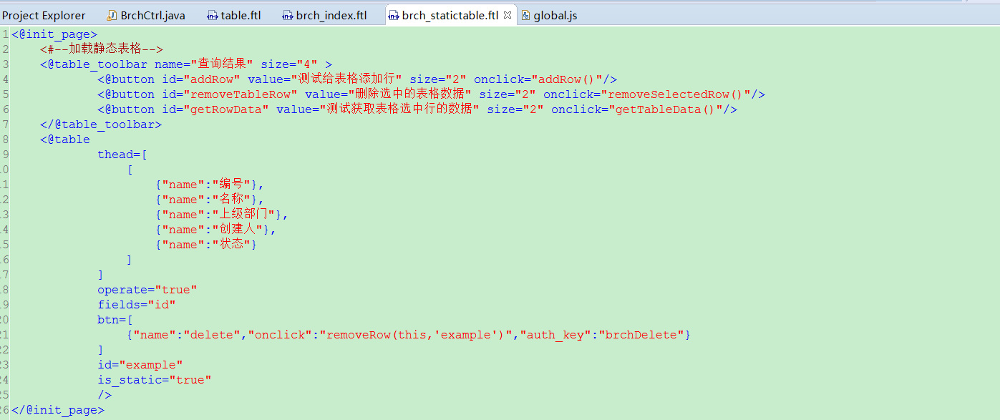
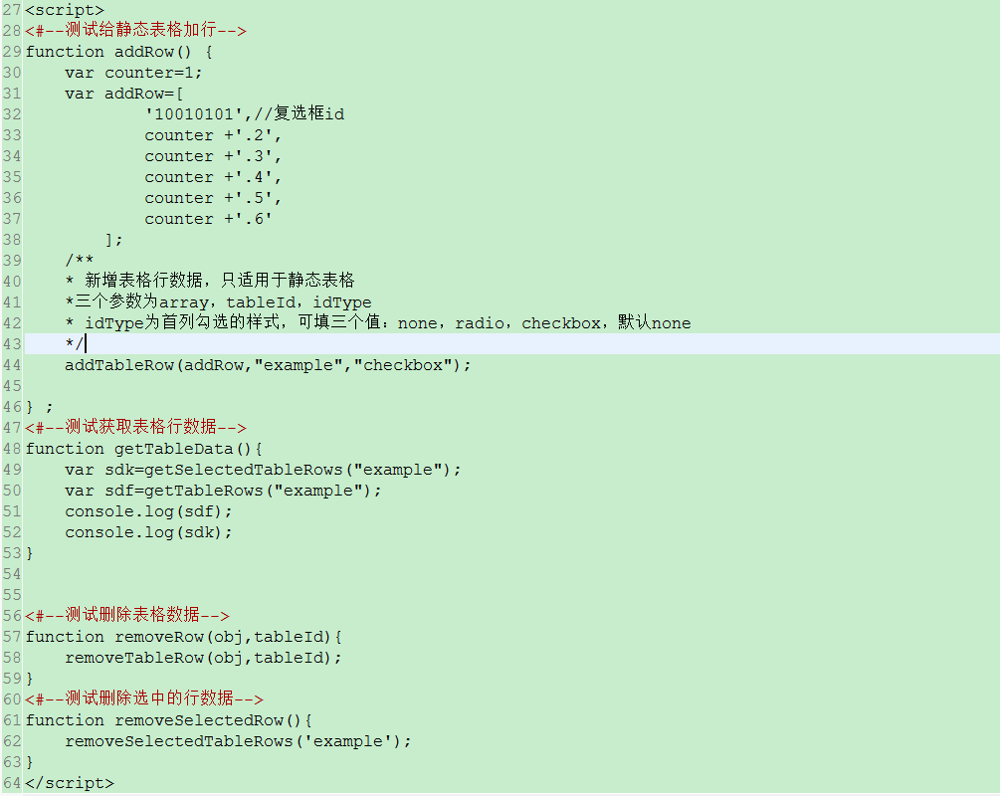
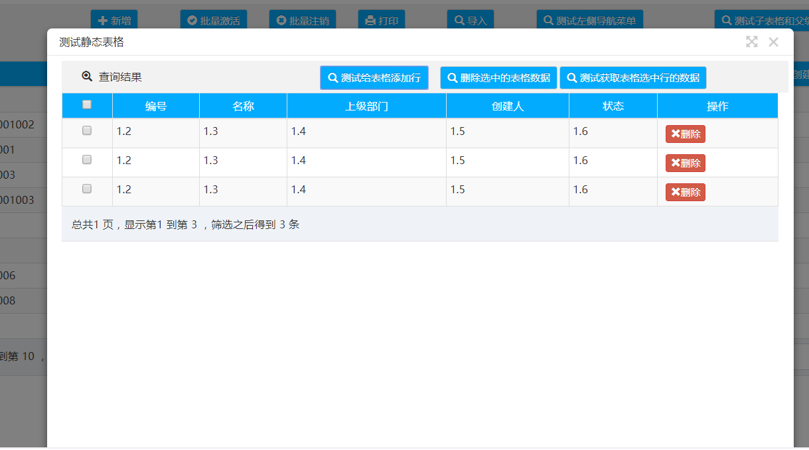
注意：加载静态的表格需要is_static,fields,id,thead等必要属性，使用静态表格后url,translate,load_data_init,callback等属性不可使用，详细代码见全量包，静态表格支持首列是否有勾选列，也支持单选，复选自定义默认脱敏方法：
1.需要配置table_default_sensitive_custom_class参数：
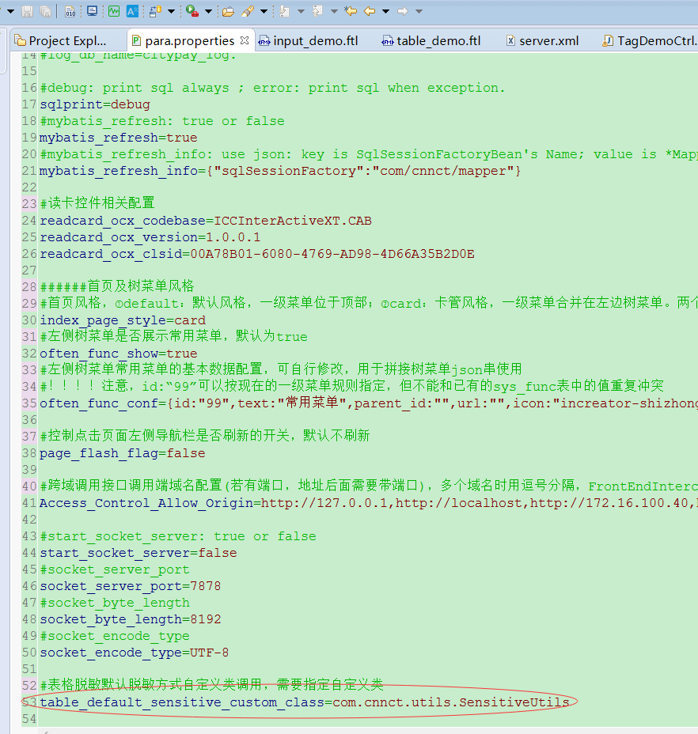
2.自定义方法：
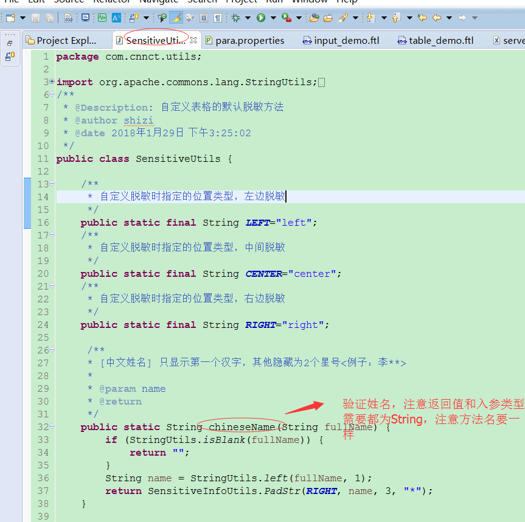
注意：只加载获取方法名为chineseName（脱敏姓名），idCardNum（脱敏身份证），fixedPhone（固定电话），mobilePhone（手机），email（邮箱），bankCard（银行卡号）的方法表格组件脱敏支持后台表数据配置脱敏【2.2】：
- 后台配置脱敏的对应的表为sys_data_des：
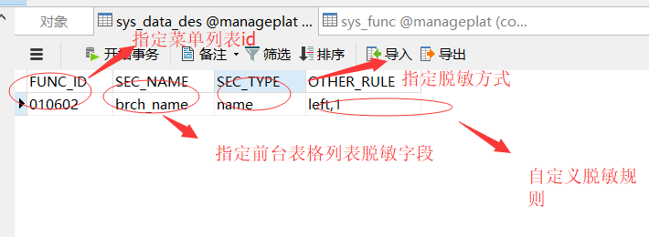 - 后台需要支持脱敏功能，在进入页面的时候，后台需要加入一句如下语句：
注意：上面表中加入数据的规则和表格中的fields_sec属性中的数据形式一致，且脱敏的优先级为前台脱敏>后台脱敏，即如果前台已经对该字段进行脱敏，后台对相同字段的脱敏将失效，如前后台都对brch_name字段脱敏，则前台的脱敏规则生效，后台的脱敏规则失效
- 后台配置脱敏的对应的表为sys_data_des：
表格的treegrid树级联结构功能开启方法【2.6】：
- 前台在table标签的fields属性中加入treegrid字段，注意该字段暂时不支持在第一列 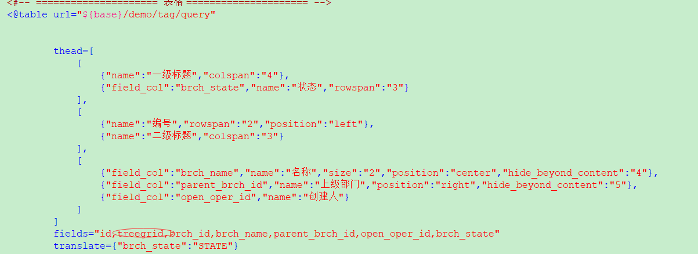
- 后台中必须回传的数据带children数据：（示例图如下） 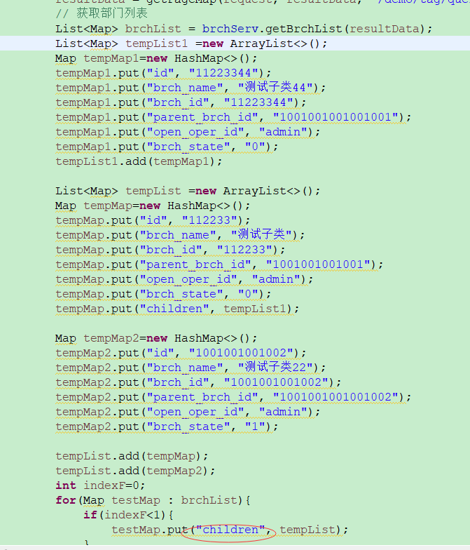 3. 注意该功能暂时不支持和表格冻结列功能同时开启